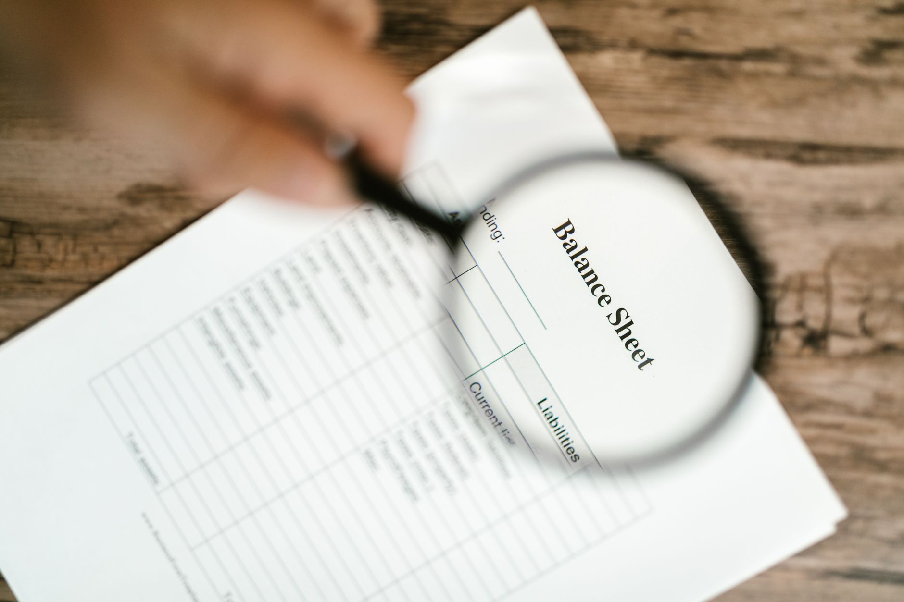

韓 자체 수출통제·美 관세 이중압박, 반도체 조달비용 15% 상승

한국 정부는 2025년 첨단 반도체 관련 품목의 수출통제를 강화하며 기존 전략물자 관리 체계에 AI 가속기용 HBM(고대역폭메모리)과 일부 로직 반도체를 추가했다. 글로벌소시스(globalsources.com) 분석에 따르면, 한국의 수출통제 시행 이후 관련 부품 조달 리드타임이 평균 4~6주 연장되고 행정 비용이 건당 약 1500~3000달러 추가 발생하고 있다.
미국은 반도체 관세 전략을 단계적으로 강화하면서 한국산 반도체에도 최소 5~15%의 관세 압박을 가하고 있다. 특히 멕시코·베트남 경유 우회 수출에 대한 원산지 검증이 강화되면서, 한국 팹리스·패키징 기업이 제3국을 통해 납품하던 경로가 막히고 있다. globalsources.com은 이 이중 압박으로 실질 조달 비용이 10~15% 상승했다고 분석했다.
미래에셋 박현주 회장은 삼성전자·SK하이닉스를 '미국도 탐내는 전략 자산'으로 규정하며, HBM 공급망에서 한국의 대체 불가 포지션을 강조했다. SK하이닉스는 엔비디아 H100·H200용 HBM3E의 유일한 양산 공급자로, 2025년 HBM 매출이 전년 대비 80% 이상 성장했다. 이 포지션이 미국의 관세 압박 강도를 일부 완충하는 협상 레버리지로 작동하고 있다.
한국의 수출통제 시행은 미국의 대중국 반도체 수출규제 체계와 연동된 결과다. 한국이 독자 통제를 하지 않을 경우 미국 EAR(수출관리규정) 적용 범위에서 '우회 경로 국가'로 분류될 위험이 있으며, 이 경우 한국 반도체 기업의 미국산 장비·소프트웨어 접근이 제한될 수 있다. 즉 한국의 자체 통제는 주권 행사인 동시에 미국 공급망 내 지위 보호를 위한 불가피한 선택이다.
공급망 압박의 성격이 달라졌다. 기존에는 중국의 수출통제(원소재)와 미국의 수출규제(장비·설계)가 한국을 압박했다면, 이제는 한국 자체 통제까지 더해지며 3중 레이어 구조가 됐다. 구매 담당자 입장에서는 동일 품목에 대해 한국 전략물자판정, 미국 EAR 해당 여부, 중국 수입규제 여부를 동시에 확인해야 하는 행정 복잡도가 폭발적으로 증가했다.
미국이 한국 반도체를 '전략 자산'으로 인식한다는 것은 양날의 칼이다. 협상 레버리지는 올라가지만, 미국 정부의 구체적 요구(중국 판매 제한, 미국 내 투자 조건, 기술 공유 협약 등)에 응하지 않을 경우 제재 대상이 될 수 있다. 삼성전자는 텍사스 테일러 파운드리에 170억 달러를 투자했으나 수율 문제로 양산 일정이 지연되고 있어 미국 정부와의 관계에서 불확실성이 남아 있다.
SK하이닉스: HBM3E 독점 공급 포지션 덕분에 미국 관세 압박과 수출통제 행정 비용을 고객사(엔비디아)에 일부 전가할 수 있는 협상력을 보유하고 있다. 2025년 HBM 평균판매가격(ASP)은 전년 대비 15~20% 상승했으며, 수급 우위가 2026년 상반기까지 유지될 전망이다.
한국 전략물자 컨설팅·법무 서비스 기업: 수출통제 복잡도가 증가할수록 수출허가 신청 대행, EAR 분류 자문, 원산지 증명 서비스 수요가 급증한다. 국내 주요 대형 로펌과 관세사 법인은 이미 2025년 1분기 기준 전략물자 관련 수임 건수가 전년 동기 대비 2배 이상 증가했다고 보고하고 있다.
중소 팹리스·반도체 유통 기업: 건당 1500~3000달러의 수출허가 행정 비용은 대기업에는 경상비 수준이지만, 연간 500건 이하 소량 다품종을 취급하는 중소 유통사에는 영업이익의 5~10%를 잠식하는 수준이다. 납기 연장(4~6주)은 재고 금융 비용 증가로 직결된다.
한국산 반도체를 중간재로 활용하는 동남아 EMS(전자제품 위탁생산) 기업: 베트남·태국 소재 EMS들이 한국산 반도체를 수입해 완제품을 조립 후 미국에 수출하는 구조였는데, 원산지 검증 강화로 이 경로의 비용이 올라갔다. 일부 EMS는 인도산·대만산으로 소싱을 전환하는 가능성을 검토 중이다.
수출통제 이중 레이어 환경에서 한국 반도체 구매 담당자는 계약 전 단계에서 반드시 EAR CCL(상무부 통제품목 목록) 해당 여부와 한국 전략물자 판정 이력을 동시에 확인해야 한다. 두 규정을 별도 절차로 처리하던 기존 관행은 납기 리스크를 키운다. 단일 품목에 대해 양국 규정을 병렬로 검토하는 내부 SOP(표준운영절차)를 갖추지 않은 기업은 수출허가 반려 시 수개월의 공급 공백에 노출된다.
투자자 관점에서 SK하이닉스의 HBM 독점 프리미엄은 2026년 하반기 삼성전자 HBM4 양산 성공 여부에 따라 희석될 수 있다. 삼성의 텍사스 파운드리 수율 정상화 여부(현재 목표 대비 60~70% 수준으로 추정)가 미국과의 관계에서 협상력 변수다. 단기 HBM 투자 포지션은 삼성 수율 뉴스 흐름에 연동해 관리할 필요가 있다.
실제 조달 현장에서는 — 수출허가 신청서에 최종 사용자(End-User) 정보를 정확히 기재하지 않아 반려되는 사례가 2025년 들어 전년 대비 30% 이상 늘었다. 특히 클라우드 데이터센터향 반도체는 최종 사용자가 다단계 재판매 구조를 거치는 경우가 많아 추적이 어렵다. 이 문제를 방치하면 허가 반려→납기 지연→위약금 발생의 연쇄가 반복된다. 계약 단계에서 최종 사용자 확약서(EUC) 징구를 조건으로 명시하는 것이 현장에서 확인된 가장 효과적인 리스크 차단 수단이다.
이 포스팅은 쿠팡 파트너스 활동의 일환으로 수수료를 제공받습니다.